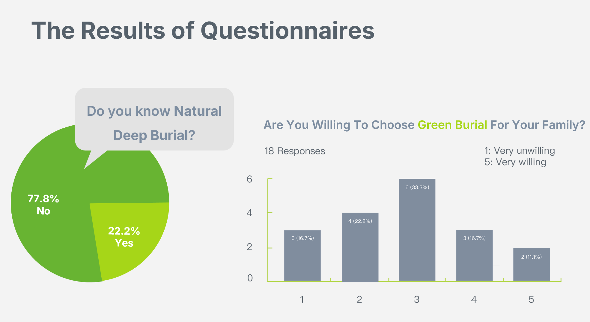
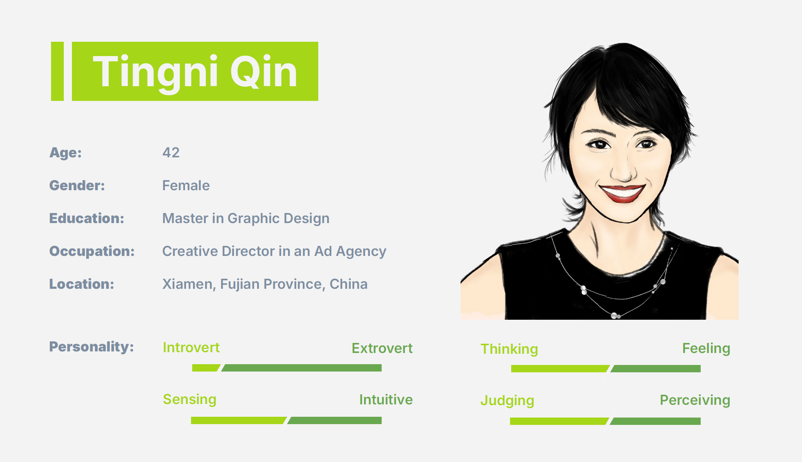
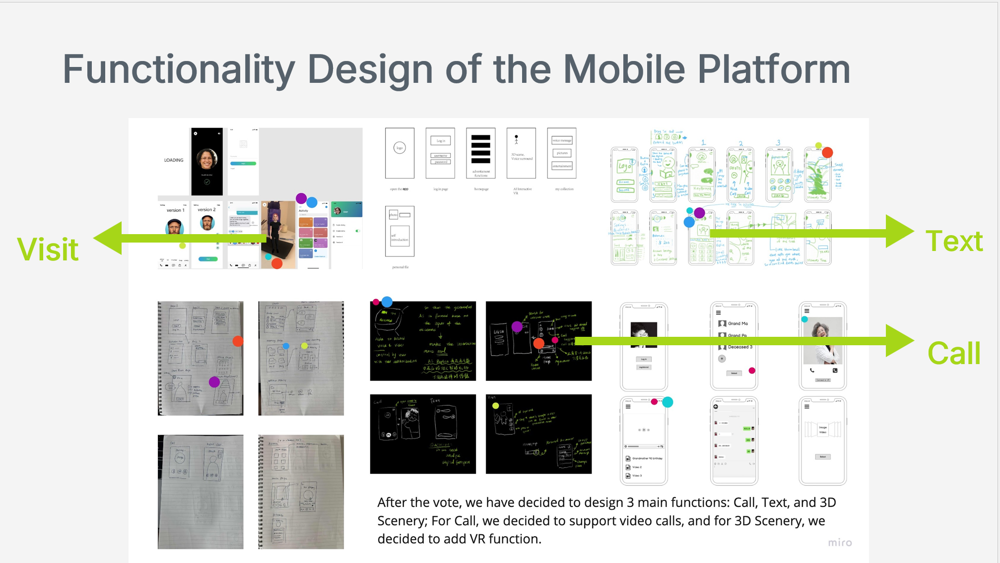
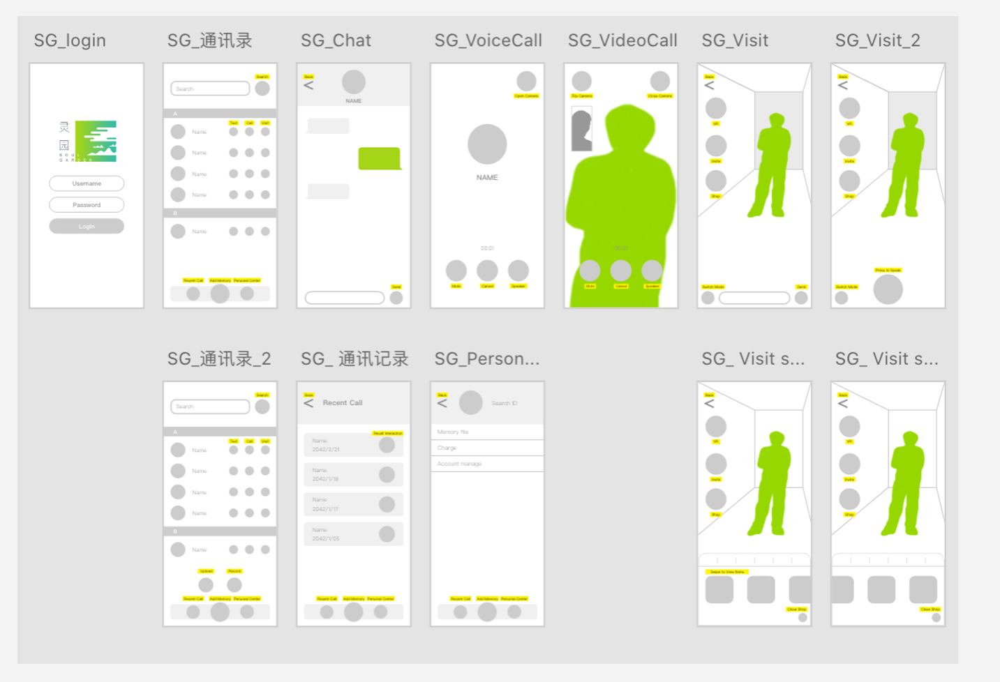
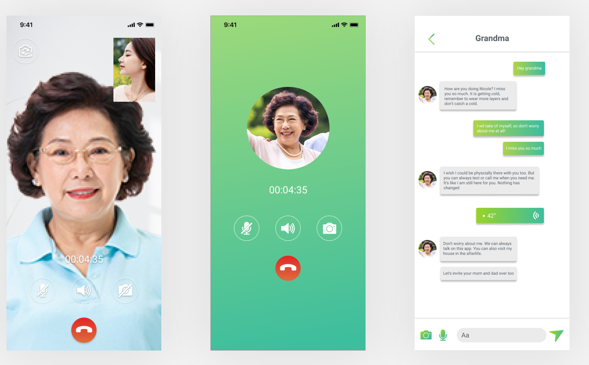
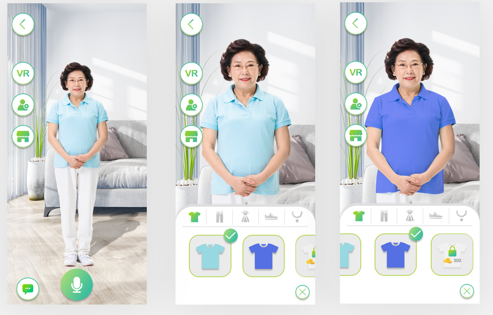
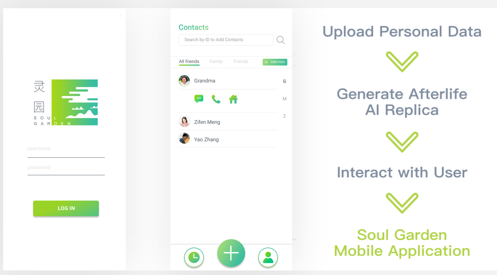

01. Problem & Context
Soul Garden is an AI-powered digital memorial platform that allows families to create and interact with AI replicas of their passed loved ones, offering an accessible, comforting alternative amidst growing cemetery space shortages.
Cemetery space shortage is becoming a critical urban issue[cite: 2]. Although eco-friendly alternatives like green burials exist, adoption remains low due to traditional cultural values and a lack of emotional connection[cite: 2].
02. User Research & Persona
We surveyed 18 participants and conducted interviews[cite: 2]. 77.8% were unaware of green burial options[cite: 2], and 94.4% felt current online platforms lacked rich interactions[cite: 2].


03. Functionality Design & Low-Fi Exploration
After team voting and concept refinement, we decided to structure the mobile platform around 3 main functions: Call (Video Calls), Text, and 3D Scenery/Visit (VR Integration)[cite: 2].


04. High-Fidelity UI & Interactions
The final mobile application enables seamless communication with an AI Replica of the deceased, featuring voice calls, text chats, wardrobe customization, and VR space visits[cite: 2].



05. Usability Testing & Iteration
Based on user feedback from prototype testing[cite: 2], we optimized the user experience with key adjustments:
- Navigation Labeling: Added clear text labels under icons to improve usability and reduce user confusion during navigation[cite: 2].
- Shop Expansion: Expanded in-app purchases beyond replica wardrobe customization to include home decorations based on user demands[cite: 2].